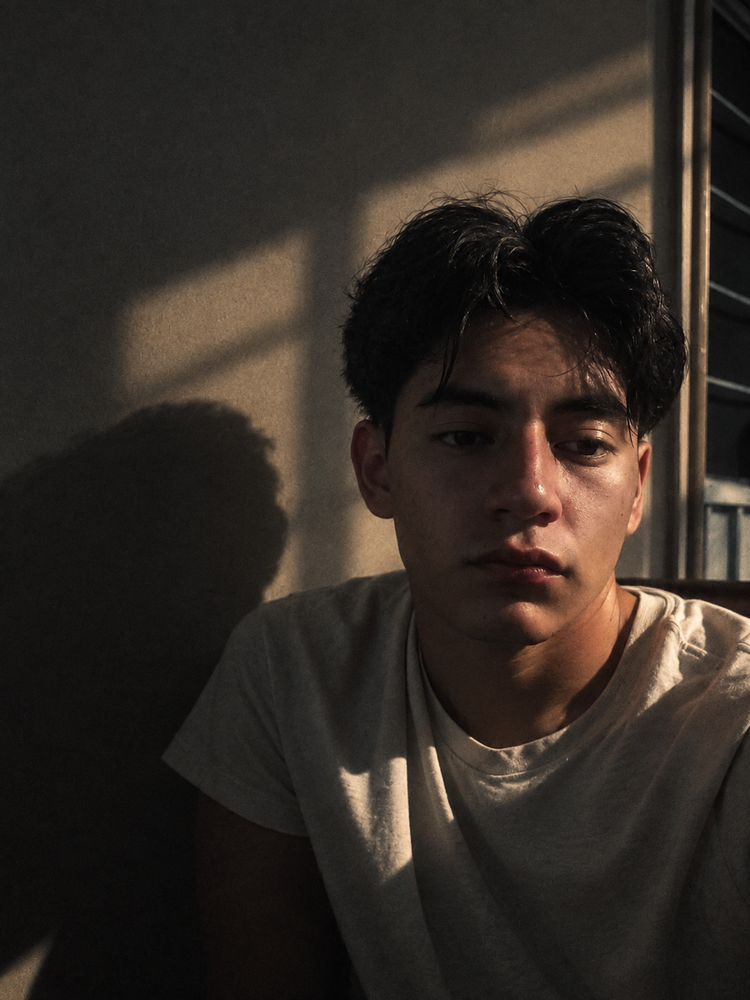

Blender
Nivel intermedio · Modelado y escenas 3D
Diseño visual · Multimedia · Movimiento
Giovanni Enrique Ortega Cruz
Estudiante de Ingeniería en Comunicación Multimedia. Desarrollo ideas a través del diseño visual, la animación y la comunicación audiovisual.

-->Me interesa integrar creatividad y herramientas digitales para comunicar ideas mediante piezas gráficas y audiovisuales. Cuento con conocimientos en composición, diseño vectorial, modelado 3D, animación y edición de video. Busco realizar prácticas profesionales donde pueda aplicar lo aprendido, colaborar con un equipo y seguir desarrollando mis capacidades.
Universidad Estatal del Valle de Ecatepec (UNEVE)
Comunicación y comprensión en contextos académicos.
Conocimientos técnicos desarrollados en proyectos académicos y práctica independiente.
Nivel intermedio · Modelado y escenas 3D
Diseño vectorial, ilustración y composición
Conocimientos de animación 2D
Nivel intermedio · Edición y montaje
Conocimientos académicos de entorno 3D
Concepto visual, narrativa y storyboard
Una selección de ejercicios y propuestas desarrolladas durante mi formación. No representan encargos comerciales.
Propuesta gráfica de presentación para un producto conceptual, con exploración de identidad visual, composición y diseño de etiquetas.
Planeación de una secuencia publicitaria mediante escenas, encuadres y recursos visuales para comunicar la propuesta de una academia.
Desarrollo de propuestas gráficas y digitales aplicando principios de diseño, composición y comunicación visual.
Interés por llevar una idea desde su planteamiento visual hasta una pieza clara, cuidada y funcional.
Me caracterizo por la atención a la composición visual, la disposición para aprender y el interés por resolver problemas de comunicación desde distintas herramientas.
Prácticas profesionales